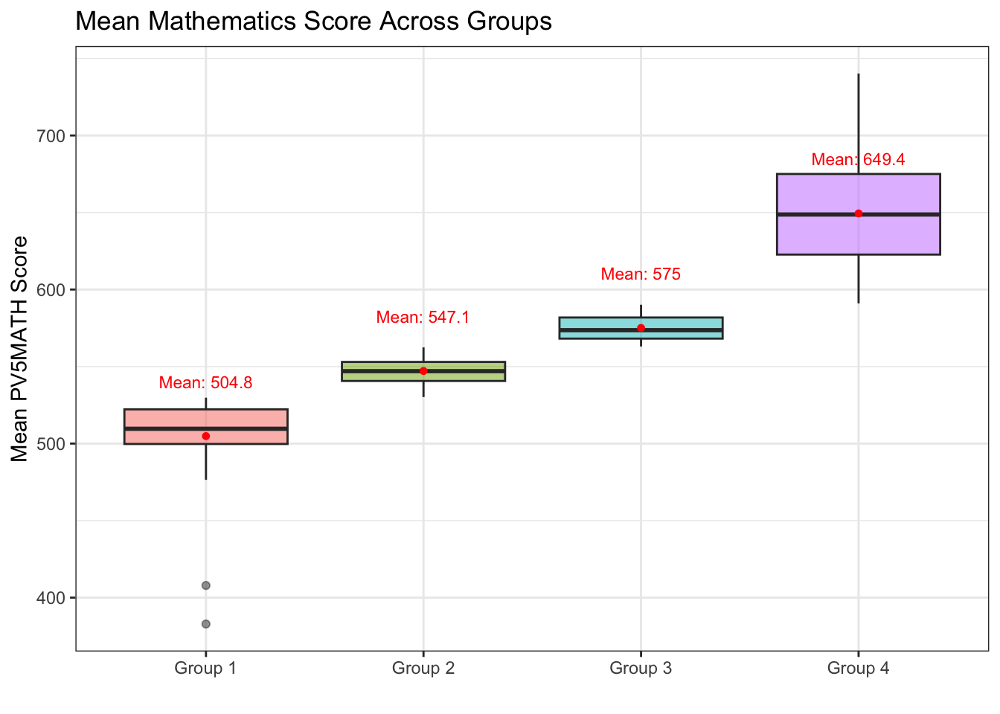
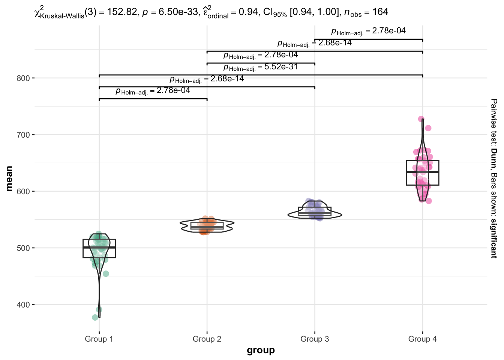
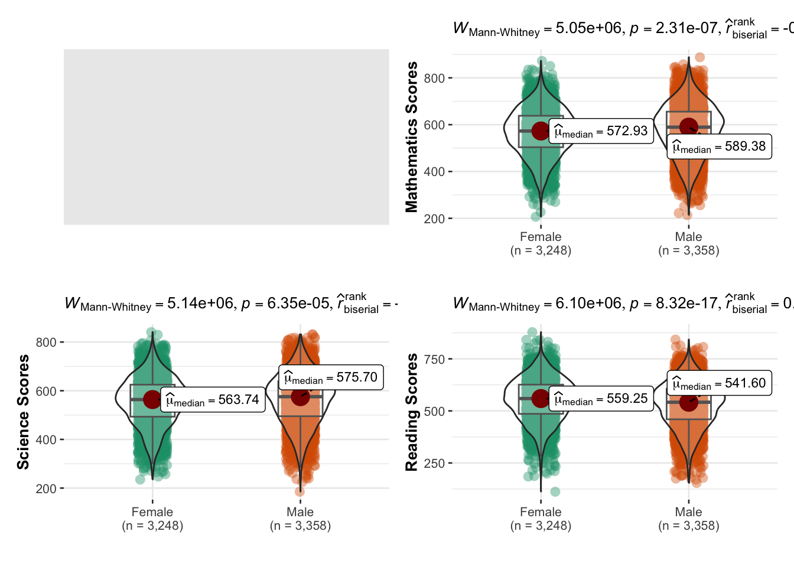
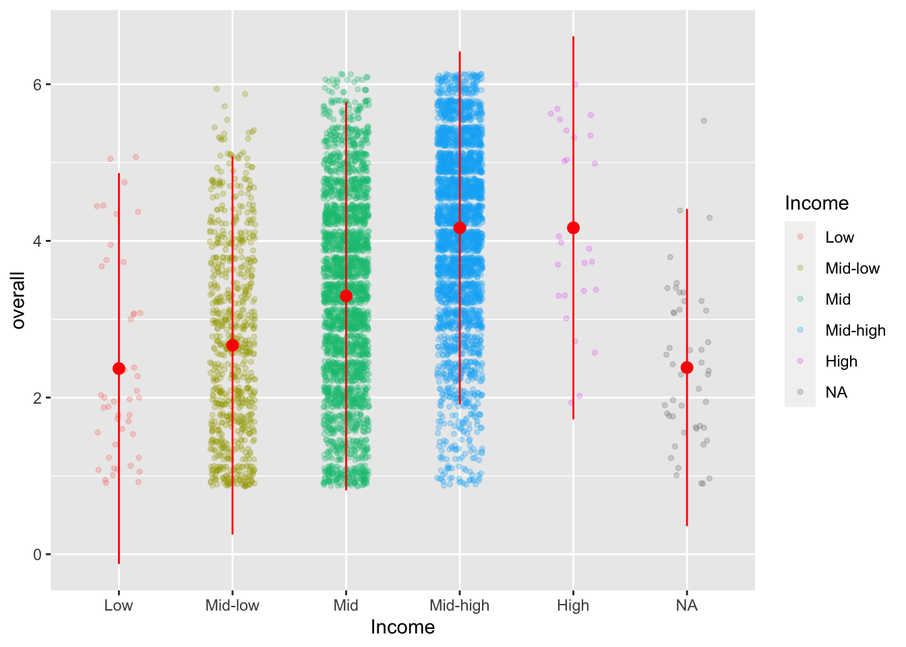

pacman::p_load(haven, tidyverse, ggplot2, e1071, dplyr,
forcats, rstatix,kableExtra, ggstatsplot,
hrbrthemes, tidyr, viridis, ggridges, nortest,
tm, proustr, VennDiagram)Is Every School a Good School?
In this exercise, exploratory data analysis methods will be conducted on the 2022 Programme for International Student Assessment (PISA) data.
1. Overview
Is every school a good school? According to OECD education director Andreas Schleicher, Singapore “managed to achieve excellence without wide differences between children from wealthy and disadvantaged families”. This spells good news for Singapore as its education system strives towards every school being a good school. Yet, public sentiments differs starkly from this. There is a strong belief that disparities continue to exist between elite and neighbourhood schools, between students from higher and lower socioeconomic status, and between students from immigrant and non-immigrant families.
In this short exercise, we will study the 2022 Programme for International Student Assessment (PISA) data to reveal the following:
- the distribution of Singapore students’ performance in Mathematics, Reading and Science; and
- the relationship between the aforementioned performances with schools, gender and socioeconomic status of the students.
2. Preliminary Set-Up
2.1 Loading Relevant R Packages
The following code chunk uses the pacman::p_load() function to install and load the relevant R packages:
2.2 Importing PISA Dataset
The dataset provided for this exercise is extremely large with over 600,000 records from students globally. For the purpose of our task, we will filter the dataset to only include records of students from Singapore (with country code “SGP”). The resultant dataset stu_sg has 6606 records.
The data dictionary of all 1279 variables can be found in the PISA 2022 Database Codebook.
Code
stu_qqq <- read_sas("Data/cy08msp_stu_qqq.sas7bdat")
stu_sg <- stu_qqq %>% filter(CNT == "SGP")
write_rds(stu_sg, "Data/stu_SG.rds")stu_sg <- read_rds("data/stu_sg.rds")3. Distribution of Performance of Singapore Students
In this section, the distribution of the performance of students in three subjects, namely Mathematics, Reading and Science, will be studied. PISA reports student performance through plausible values (PV), which can be defined as random values from the posterior distributions. PISA analysts have indicated that there is no substantial differences in using one or all 10 available plausible values in a large sample. Therefore, we will be using Plausible Value 5(PV5) for all subjects in our subsequent analysis.
The distributions for each subject will be visualised using violin plots, which can be considered a combination of box plots and kernel density plots. A violin plot was chosen to visualise the distribution of performance scores as it shows the summary statistics and the full distribution of the data.
Proficiency scales, designed by PISA to facilitate reporting of general population-level results rather than results for individual students, were incorporated into the plots as well. The proficiency scales categorises scores into six levels based on subject-specific thresholds, with students in Level 1 being the least proficient in the subject and students in Level 6 being the most proficient. Students scoring below Level 2 are considered low-performing while students scoring at Level 5 or above are considered high-performing. These levels are reflected in the plots through its background colours. Each performance band is shaded a different colour using geom_rect() based on its lower and upper bound provided by PISA.
3.1 Distribution of Performance in Mathematics
The code chunk below defines the performance bands based on the lower and upper bound for scores as stipulated by PISA.
rects_math <- data.frame(ystart = c(46, 420.07, 482.38, 544.68, 606.99, 669.30),
yend = c(420.07, 482.38, 544.68, 606.99, 669.30, 950),
Levels = c("Level 1", "Level 2", "Level 3", "Level 4", "Level 5", "Level 6"))
Design Considerations for Violin Plot
- Plotting of the performance bands using
geom_rect()has to precede all other plots to ensure that it is set as the background of the plot. - By default,
geom_violin()sets trim=TRUE and the tails of the violins are trimmed. It was thus set to FALSE to ensure the entire range of performance scores is included in the plot. - The five-number summary statistics (minimum, first quartile, median, third quartile and maximum in black font) and the mean (in blue font) are displayed on the plot for greater clarity.
Code
ggplot(data=stu_sg, aes(x=CNTRYID, y=as.numeric(PV5MATH))) +
# Adding background rectangle shading to mark out performance bands
geom_rect(data=rects_math,
aes(ymin=as.numeric(ystart), ymax=as.numeric(yend), xmin=-Inf, xmax=Inf, fill=Levels),
inherit.aes=FALSE, alpha=0.15) +
# Adding axis labels, title and subtitle
labs(x="", y="PV5 Scores for Mathematics",
title="Mathematics Scores of Students",
subtitle="\n Mean score labelled in blue. Minimum, quantiles and maximum labelled in black.") +
# Adding violin plot
geom_violin(trim=FALSE, color="red", alpha=0) +
# Adding boxplot
geom_boxplot(width=0.1, color="black", alpha=0) +
# Adding summary statistic annotations
stat_summary(geom="text", fun.y=quantile,
aes(label=sprintf("%1.1f", ..y..)),
position=position_nudge(x=0.15), size=3) +
# Adding mean annotation
stat_summary(geom="point", fun.y="mean", color="blue", fill="blue", size=2, shape=21) +
stat_summary(geom="text", fun.y="mean", color="blue",
aes(label=sprintf("%1.1f", ..y..)),
position=position_nudge(x=0.09), size=3) +
# Setting x-axis limits as CNTRYID was used as x-variable arbitrarily - all records have CTRYID of 702
scale_x_continuous(limits=c(701.5, 702.5)) +
coord_flip() +
theme(axis.title.y=element_blank(), axis.text.y=element_blank(), axis.ticks.y=element_blank())
Insights on Mathematics Performance
The mean score for Mathematics is 573.4 while the median score is 580.0. Both scores fall within Level 4 on the Proficiency Scale, indicating that the average student in Singapore are moderately proficient in Mathematics.
The distribution displays a slight left skew (skewness = -0.246 using
skewness()). With the peak or mode of the distribution lying towards the right, there is a larger number of students with performance scores that are closer to the higher end.The lower bound of Level 5 proficiency of 606.99 lies between the median (580.0) and the upper quartile (647.3). This indicates that a rather substantial portion (albeit less than 50%) of students are top performers in Mathematics.
3.2 Distribution of Performance in Science
Using the same approach as Section 3.1, the violin plot was generated for Science scores.
Code
rects_sci <- data.frame(ystart = c(39, 409.54, 484.14, 558.73, 633.33, 707.93),
yend = c(409.54, 484.14, 558.73, 633.33, 707.93, 924),
Levels = c("Level 1", "Level 2", "Level 3", "Level 4", "Level 5", "Level 6"))
ggplot(data=stu_sg, aes(x=CNTRYID, y=as.numeric(PV5SCIE))) +
# Adding background rectangle shading to mark out performance bands
geom_rect(data=rects_sci,
aes(ymin=as.numeric(ystart), ymax=as.numeric(yend), xmin=-Inf, xmax=Inf, fill=Levels),
inherit.aes=FALSE, alpha=0.15) +
# Adding axis labels, title and subtitle
labs(x="", y="PV5 Scores for Science",
title="Science Scores of Students",
subtitle="\n Mean score labelled in blue. Minimum, quantiles and maximum labelled in black.") +
# Adding violin plot
geom_violin(trim=FALSE, color="red", alpha=0) +
# Adding boxplot
geom_boxplot(width=0.1, color="black", alpha=0) +
# Adding summary statistic annotations
stat_summary(geom="text", fun.y=quantile,
aes(label=sprintf("%1.1f", ..y..)),
position=position_nudge(x=0.15), size=3) +
# Adding mean annotation
stat_summary(geom="point", fun.y="mean", color="blue", fill="blue", size=2, shape=21) +
stat_summary(geom="text", fun.y="mean", color="blue",
aes(label=sprintf("%1.1f", ..y..)),
position=position_nudge(x=0.09), size=3) +
# Setting x-axis limits as CNTRYID was used as x-variable arbitrarily - all records have CTRYID of 702
scale_x_continuous(limits=c(701.5, 702.5)) +
coord_flip() +
theme(axis.title.y=element_blank(), axis.text.y=element_blank(), axis.ticks.y=element_blank())
Insights on Science Performance
The mean score for Science is 561.5 while the median score is 569.7. Both scores fall within Level 4 on the Proficiency Scale, indicating that the average student in Singapore are moderately proficient in Science.
The distribution displays a slight left skew (skewness = -0.297 using
skewness()). With the peak or mode of the distribution lying towards the right, there is a larger number of students with performance scores that are closer to the higher end.Around 25% of students attained scores more than or equal to 632.1. With the score point range starting from 633.33 for Level 5, slightly less than 25% of Singapore students are top performers in Science.
3.3 Distribution of Performance in Reading
Using the same approach as Section 3.1, the violin plot was generated for Reading scores.
Code
rects_read <- data.frame(ystart = c(0, 407.47, 480.18, 552.89, 625.61, 698.32),
yend = c(407.47, 480.18, 552.89, 625.61, 698.32, 938),
Levels = c("Level 1", "Level 2", "Level 3", "Level 4", "Level 5", "Level 6"))
ggplot(data=stu_sg, aes(x=CNTRYID, y=as.numeric(PV5READ))) +
# Adding background rectangle shading to mark out performance bands
geom_rect(data=rects_sci,
aes(ymin=as.numeric(ystart), ymax=as.numeric(yend), xmin=-Inf, xmax=Inf, fill=Levels),
inherit.aes=FALSE, alpha=0.15) +
# Adding axis labels, title and subtitle
labs(x="", y="PV5 Scores for Reading",
title="Science Scores of Reading",
subtitle="\n Mean score labelled in blue. Minimum, quantiles and maximum labelled in black.") +
# Adding violin plot
geom_violin(trim=FALSE, color="red", alpha=0) +
# Adding boxplot
geom_boxplot(width=0.1, color="black", alpha=0) +
# Adding summary statistic annotations
stat_summary(geom="text", fun.y=quantile,
aes(label=sprintf("%1.1f", ..y..)),
position=position_nudge(x=0.15), size=3) +
# Adding mean annotation
stat_summary(geom="point", fun.y="mean", color="blue", fill="blue", size=2, shape=21) +
stat_summary(geom="text", fun.y="mean", color="blue",
aes(label=sprintf("%1.1f", ..y..)),
position=position_nudge(x=0.09), size=3) +
# Setting x-axis limits as CNTRYID was used as x-variable arbitrarily - all records have CTRYID of 702
scale_x_continuous(limits=c(701.5, 702.5)) +
coord_flip() +
theme(axis.title.y=element_blank(), axis.text.y=element_blank(), axis.ticks.y=element_blank())
Insights on Reading Performance
The mean score for Reading is 541.9 while the median score is 551.2. Both scores fall within Level 3 on the Proficiency Scale, indicating that an average student in Singapore are moderately proficient in Reading. However, students recorded an average of Level 4 in Mathematics and Science, thus indicating that students in Singapore may be more proficient in Mathematics and Science compared to Reading
The distribution displays a slight left skew (skewness = -0.366 using
skewness()). With the peak or mode of the distribution lying towards the right, there is a larger number of students with performance scores that are closer to the higher end.Around 25% of students attained scores more than or equal to 617.1. With the score point range starting from 625.61 for Level 5, slightly less than 25% of Singapore students are top performers in Reading.
4. Relationship between Performance and Schools, Gender and Socioeconomic Status of Students
In this section, the relationship between the performance of students and their schools, gender and socioeconomic status of students will be studied.
4.1 Relationship between Performance and Schools
The Ministry of Education (MOE) in Singapore grouped schools into nine bands with each band comprising schools with similar academic performance. The top 50 Special/Express and top 40 Normal course ranking tables were published to rank schools’ academic performances. While the school banding by academic results was abolished in 2012, informal school rankings developed by parents or interested parties continue to exist to this day. This highlights a common sentiments among parents and students - not all schools are equal and some are better than others.
In this section, we explore the relationship between schools and the performance of its students. Specifically, we ask if the choice of school affects the performance of students in terms of their performance in Mathematics, Science and Reading.
4.1.1 Grouping Schools for Meaningful Analysis
In the PISA database, the schools of individual students are recorded as 8-character code CNTSCHID. There are 164 unique CNTSCHID in our stu_sg database. Such large number of school categories will clutter our visualisations and make subsequent analysis unmeaningful. For increased clarity, we will reduce the number of school categories by grouping the schools into 4 groups - Groups 1 to 4. For each subject, Group 1 will consist of schools with the lowest scores, followed by Group 2 then Group 3, with Group 4 consisting of schools with the highest scores.
Process for Grouping Schools
The
group_by()function from thedplyrpackage was used to group the dataframe using the CNTSCHID column then finding the mean of the Plausible Value 5 (PV5) scores for each groupThe resultant dataframe (consisting of School ID and corresponding mean PV5 scores) was sorted based on the mean PV5 scores in ascending order using the
order()function.The ordered list for schools is split into four equal groups, with Group 1 consisting of schools with the lowest scores and Group 4 consisting of schools with the highest scores.
Group Ranked (in ascending order) Data Points 1 1 - 41 2 42 - 82 3 83 - 123 4 124 - 164 The schools are labelled based on the group they belong to, namely Group 1, Group 2, Group 3 and Group 4, in a new column called group.
Code Block for Grouping Schools for Mathematics
# Group based on School ID then find mean PV5 score
math_sch <- stu_sg %>%
group_by(CNTSCHID) %>%
summarise(mean = mean(PV5MATH))
# Sort based on mean PV5 score
math_sch <- math_sch[order(math_sch$mean), ]
# Label where school lies
math_sch$group <- c(rep("Group 1", 41), rep("Group 2", 41), rep("Group 3", 41), rep("Group 4", 41))Code Block for Grouping Schools for Science
# Group based on School ID then find mean PV5 score
sci_sch <- stu_sg %>%
group_by(CNTSCHID) %>%
summarise(mean = mean(PV5SCIE))
# Sort based on mean PV5 score
sci_sch <- sci_sch[order(sci_sch$mean), ]
# Label where school lies
sci_sch$group <- c(rep("Group 1", 41), rep("Group 2", 41), rep("Group 3", 41), rep("Group 4", 41))Code Block for Grouping Schools for Reading
# Group based on School ID then find mean PV5 score
read_sch <- stu_sg %>%
group_by(CNTSCHID) %>%
summarise(mean = mean(PV5READ))
# Sort based on mean PV5 score
read_sch <- read_sch[order(read_sch$mean), ]
# Label where school lies
read_sch$group <- c(rep("Group 1", 41), rep("Group 2", 41), rep("Group 3", 41), rep("Group 4", 41))4.1.2 Relationship between Mathematics Scores and School
The relationship between Mathematics scores and the school the students attend will be visualised using a box plot. As box plots helps visualise the center and spread of data, clear comparisons of the mean performance between school groups can be made using side-by-side box plots.
Design Consideration for Box Plot
The mean value can be reflected in the plot using
geom_text()and in-built summary functionalitystat_summary()ofggplot2. As the dataframe math_sch has a variable called mean,stat_summary()refers to the variable instead of themeanfunction from the {base} package. To circumvent this issue, the fully qualified namebase::meanis used instead of the basemean.The default grid background can be removed for greater clarity using
theme_bw().The legend was removed using
theme()as it was unnecessary for interpretation of the plot.
Based on the box plots, it appears that Mathematics scores are lowest in schools in the min group and highest in schools in the max group.
Code
math_sch %>%
# Plotting boxplot of mean scores against groups
ggplot(aes(x=group, y=mean, fill=group)) +
geom_boxplot(alpha=0.5) +
# Labelling plot and axis
ggtitle("Mean Mathematics Score Across Groups") +
xlab("") +
ylab("Mean PV5MATH Score") +
# Adding mean value for each group
stat_summary(fun=base::mean, geom="point", shape=20, size=2, color="red", fill="red") +
stat_summary(fun=base::mean, color="red", geom="text", vjust=-4, size=3,
aes(label=paste("Mean:", round(..y.., digits=1)))) +
# Removing grid background
theme_bw() +
# Removing legend
theme(legend.position="none")
To ascertain our observation, tests for normality was first conducted on the distribution for each school group. A visual assessment via a Q-Q plot and a significance test via the Shapiro-Wilk’s test were used to ascertain whether the data show a serious deviation from normality. The Q-Q plot was plotted using the geom_qq() and geom_qq_line() functions from the ggplot library while the Shapiro-Wilk’s test was conducted using the shapiro_test() function from the rstatix library.
Code
math_sch %>%
ggplot(aes(sample=mean)) +
geom_qq() + geom_qq_line() +
facet_wrap(~group, scales="free_y", nrow=1) +
labs(title="Normality Assumption Test",
x="", y="") +
theme_bw() +
theme(axis.text.x=element_blank(),
axis.text.y=element_blank(),
panel.grid.major=element_blank(),
panel.grid.minor=element_blank(),
axis.ticks=element_blank())Code
math_sch %>%
group_by(group) %>%
shapiro_test(mean) %>%
kbl() %>%
kable_styling(full_width=FALSE, bootstrap_options = "responsive")| group | variable | statistic | p |
|---|---|---|---|
| Group 1 | mean | 0.6774551 | 0.0000000 |
| Group 2 | mean | 0.9675082 | 0.2851858 |
| Group 3 | mean | 0.9253653 | 0.0101652 |
| Group 4 | mean | 0.9665143 | 0.2640175 |
Since the p-values for Groups 1 and 3 are less than 0.05, Mathematics scores do not follow a normal distribution across all groups. A non-parametric ANOVA test will thus be used to compare the mean Mathematics score.
A non-parametric Kruskal-Wallis One-Way ANOVA test was used to compare the mean Mathematics scores across groups, with the following hypothesis:
H0: The mean Mathematics scores is the same for all school groups.
H1: The mean Mathematics scores is not the same for all school groups.
The Kruskal-Wallist and post-hoc tests was conducted using the ggbetweenstats() function from the ggstatsplot package.
Code
ggbetweenstats(
data=math_sch,x=group, y=mean,
type="nonparametric",plot.type="box",
pairwise.comparisons=TRUE, pairwise.display="significant",
centrality.plotting=FALSE, bf.message=FALSE)
The p-values of the Kruskal-Wallis test and all pairwise tests are less than 0.05. There is thus sufficient evidence to reject H0 and conclude that the mean Mathematics score is significantly different for each group.
Insights on Relationship between Schools and Mathematics Performance
Mathematics scores are lowest in Group 1 schools and highest in Group 4 schools. The difference in mean scores between the two groups is 144.6.
Mathematics scores increases in the following order: Group 1, Group 2, Group 3, Group 4.
4.1.3 Relationship between Science Scores and School
Based on the bar chart, it appears that Science scores are lowest in schools in the min group and highest in schools in the max group.
Code
sci_sch %>%
# Plotting boxplot of mean scores against groups
ggplot(aes(x=group, y=mean, fill=group)) +
geom_boxplot(alpha=0.5) +
# Labelling plot and axis
ggtitle("Mean Science Score Across Groups") +
xlab("") +
ylab("Mean PV5SCIE Score") +
# Adding mean value for each group
stat_summary(fun=base::mean, geom="point", shape=20, size=2, color="red", fill="red") +
stat_summary(fun=base::mean, color="red", geom="text", vjust=-3, size=3,
aes(label=paste("Mean:", round(..y.., digits=1)))) +
# Removing grid background
theme_bw() +
# Removing legend
theme(legend.position="none")Code
sci_sch %>%
ggplot(aes(sample=mean)) +
geom_qq() + geom_qq_line() +
facet_wrap(~group, scales="free_y", nrow=1) +
labs(title="Normality Assumption Test",
x="", y="") +
theme_bw() +
theme(axis.text.x=element_blank(),
axis.text.y=element_blank(),
panel.grid.major=element_blank(),
panel.grid.minor=element_blank(),
axis.ticks=element_blank())Code
sci_sch %>%
group_by(group) %>%
shapiro_test(mean) %>%
kbl() %>%
kable_styling(full_width=FALSE, bootstrap_options = "responsive")| group | variable | statistic | p |
|---|---|---|---|
| Group 1 | mean | 0.7447895 | 0.0000005 |
| Group 2 | mean | 0.9431588 | 0.0403869 |
| Group 3 | mean | 0.9116637 | 0.0037318 |
| Group 4 | mean | 0.9505109 | 0.0729322 |
Since the p-values for Groups 1, 2 and 3 are less than 0.05, Science scores do not follow a normal distribution across all groups. A non-parametric ANOVA test will thus be used to compare the mean Science score.
A non-parametric Kruskal-Wallis One-Way ANOVA test was used to compare the mean Science scores across groups, with the following hypothesis:
H0: The mean Science scores is the same for all school groups.
H1: The mean Science scores is not the same for all school groups.
The Kruskal-Wallist and post-hoc tests was conducted using the ggbetweenstats() function from the ggstatsplot package.
Code
ggbetweenstats(
data=sci_sch,x=group, y=mean,
type="nonparametric",plot.type="box",
pairwise.comparisons=TRUE, pairwise.display="significant",
centrality.plotting=FALSE, bf.message=FALSE)
The p-values of the Kruskal-Wallis test and all pairwise tests are less than 0.05. There is thus sufficient evidence to reject H0 and conclude that the mean Science score is significantly different for each group.
Insights on Relationship between Schools and Science Performance
Science scores are lowest in Group 1 schools and highest in Group 4 schools. The difference in mean scores between the two groups is 138.9.
Science scores increases in the following order: Group 1, Group 2, Group 3, Group 4.
4.1.4 Relationship between Reading Scores and Schools
Based on the bar chart, it appears that Reading scores are lowest in schools in the min group and highest in schools in the max group.
Code
read_sch %>%
# Plotting boxplot of mean scores against groups
ggplot(aes(x=group, y=mean, fill=group)) +
geom_boxplot(alpha=0.5) +
# Labelling plot and axis
ggtitle("Mean Reading Score Across Groups") +
xlab("") +
ylab("Mean PV5READ Score") +
# Adding mean value for each group
stat_summary(fun=base::mean, geom="point", shape=20, size=2, color="red", fill="red") +
stat_summary(fun=base::mean, color="red", geom="text", vjust=-3, size=3,
aes(label=paste("Mean:", round(..y.., digits=1)))) +
# Removing grid background
theme_bw() +
# Removing legend
theme(legend.position="none")Code
read_sch %>%
ggplot(aes(sample=mean)) +
geom_qq() + geom_qq_line() +
facet_wrap(~group, scales="free_y", nrow=1) +
labs(title="Normality Assumption Test",
x="", y="") +
theme_bw() +
theme(axis.text.x=element_blank(),
axis.text.y=element_blank(),
panel.grid.major=element_blank(),
panel.grid.minor=element_blank(),
axis.ticks=element_blank())Code
read_sch %>%
group_by(group) %>%
shapiro_test(mean) %>%
kbl() %>%
kable_styling(full_width=FALSE, bootstrap_options = "responsive")| group | variable | statistic | p |
|---|---|---|---|
| Group 1 | mean | 0.6930397 | 0.0000001 |
| Group 2 | mean | 0.9266733 | 0.0112172 |
| Group 3 | mean | 0.9316844 | 0.0164318 |
| Group 4 | mean | 0.9591611 | 0.1469983 |
Since the p-values for Groups 1, 2 and 3 are less than 0.05, Reading scores do not follow a normal distribution across all groups. A non-parametric ANOVA test will thus be used to compare the mean Reading score.
A non-parametric Kruskal-Wallis One-Way ANOVA test was used to compare the mean Reading scores across groups, with the following hypothesis:
H0: The mean Reading scores is the same for all school groups.
H1: The mean Reading scores is not the same for all school groups.
The Kruskal-Wallist and post-hoc tests was conducted using the ggbetweenstats() function from the ggstatsplot package.
Code
ggbetweenstats(
data=read_sch,x=group, y=mean,
type="nonparametric",plot.type="box",
pairwise.comparisons=TRUE, pairwise.display="significant",
centrality.plotting=FALSE, bf.message=FALSE)The p-values of the Kruskal-Wallis test and all pairwise tests are less than 0.05. There is thus sufficient evidence to reject H0 and conclude that the mean Reading score is significantly different for each group.
Insights on Relationship between Schools and Reading Performance
Reading scores are lowest in Group 1 schools and highest in Group 4 schools. The difference in mean scores between the two groups is 143.6.
Reading scores increases in the following order: Group 1, Group 2, Group 3, Group 4.
4.1.5 Relationship between Schools and Overall Performance
From Sections 4.1.2 to 4.1.4, we observed that performance for all subjects increases from Group 1 through to 4. It may be the case that different schools specialise in different subjects, which does not seem to be a completely unfavourable scenario as students can choose their schools based on their passion in certain areas. This would mean that the schools in each group differs from subject to subject. However, if the composition of schools in each group remain relatively stable across subjects, it would mean that high performance is clustered within a select few schools and lower performance is more prevalent in other select few schools. This may be bad news as it shows that students may face huge stress to gain entry in such Group 4 schools while students from Group 4 schools may be labelled as having poor academic performance right from the get-go.
In particular, we will focus on Group 1 and Group 4 as they are at the extreme ends of the performance spectrum. A Venn Diagram will be used to visualise the number of schools that are common between each pair of school groups. This gives a clear visualisation of how many schools each pair of school groups have in common. The venn.diagram() function from the VennDiagram package will be used.
Code
# Preparing dataset
g1_math <- math_sch %>% filter(group=="Group 1")
g1_math$subject <- "Math"
g1_sci <- sci_sch %>% filter(group=="Group 1")
g1_sci$subject <- "Science"
g1_read <- read_sch %>% filter(group=="Group 1")
g1_read$subject <- "Reading"
g1 <- rbind(g1_math[, c(1,4)], g1_sci[, c(1,4)], g1_read[, c(1,4)])
# Plotting Venn Diagram
venn.diagram(
x=list(
g1 %>% filter(subject=="Math") %>% select(CNTSCHID) %>% unlist(),
g1 %>% filter(subject=="Science") %>% select(CNTSCHID) %>% unlist(),
g1 %>% filter(subject=="Reading") %>% select(CNTSCHID) %>% unlist()
),
category.names=c("Math", "Science", "Reading"),
filename="venn_g1.png",
output = TRUE ,
imagetype="png" ,
height = 480 ,
width = 480 ,
resolution = 300,
compression = "lzw",
lwd = 1,
col=c("#440154ff", '#21908dff', '#fde725ff'),
fill = c(alpha("#440154ff",0.3), alpha('#21908dff',0.3), alpha('#fde725ff',0.3)),
cex = 0.5,
fontfamily = "sans",
cat.cex = 0.3,
cat.default.pos = "outer",
cat.pos = c(-27, 27, 135),
cat.dist = c(0.055, 0.055, 0.085),
cat.fontfamily = "sans",
cat.col = c("#440154ff", '#21908dff', '#fde725ff'),
rotation = 1
)
From the Venn Diagram, we can see a significant overlap of schools in Group 1. Each subject has 41 schools in Group 1. Out of the 41 schools, 31 schools belong to Group 1 for all three subjects. This means that students with the lowest performance in all three subjects are largely concentrated in the same schools.
Code
# Preparing dataset
g4_math <- math_sch %>% filter(group=="Group 4")
g4_math$subject <- "Math"
g4_sci <- sci_sch %>% filter(group=="Group 4")
g4_sci$subject <- "Science"
g4_read <- read_sch %>% filter(group=="Group 4")
g4_read$subject <- "Reading"
g4 <- rbind(g4_math[, c(1,4)], g4_sci[, c(1,4)], g4_read[, c(1,4)])
# Plotting Venn Diagram
venn.diagram(
x=list(
g4 %>% filter(subject=="Math") %>% select(CNTSCHID) %>% unlist(),
g4 %>% filter(subject=="Science") %>% select(CNTSCHID) %>% unlist(),
g4 %>% filter(subject=="Reading") %>% select(CNTSCHID) %>% unlist()
),
category.names=c("Math", "Science", "Reading"),
filename="venn_g4.png",
output = TRUE ,
imagetype="png" ,
height = 480 ,
width = 480 ,
resolution = 300,
compression = "lzw",
lwd = 1,
col=c("#440154ff", '#21908dff', '#fde725ff'),
fill = c(alpha("#440154ff",0.3), alpha('#21908dff',0.3), alpha('#fde725ff',0.3)),
cex = 0.5,
fontfamily = "sans",
cat.cex = 0.3,
cat.default.pos = "outer",
cat.pos = c(-27, 27, 135),
cat.dist = c(0.055, 0.055, 0.085),
cat.fontfamily = "sans",
cat.col = c("#440154ff", '#21908dff', '#fde725ff'),
rotation = 1
)From the Venn Diagram, we can see a even more significant overlap of schools in Group 4. Each subject has 41 schools in Group 4. Out of the 41 schools, 37 schools belong to Group 4 for all three subjects. This means that students with the highest performance in all three subjects are largely concentrated in the same schools.
Insights on Relationship between Schools and Overall Performance
Students with the lowest performance across all subjects are largely concentrated in the same schools
Students with the highest performance across all subjects are also largely concentrated in the same schools
4.2 Relationship between Performance and Gender
Research shows that females and males excel in different areas. According to a study published in American Psychologist, researchers found that girls scored higher on literacy (or reading) tests than boys after reviewing data on 3.9 million literacy tests. Conversely, Wrigley-Asante et al. (2023) explained that the overall academic performance of males was rated higher than females.
In this section, we explore the relationship between gender and the performance of its students. Specifically, we ask if the gender affects the performance of students in terms of their performance in Mathematics, Science and Reading.
In the PISA dataset, the gender of students are recorded in the ST004D01T column. A quick check of the data using the n_distinct() function from the dplyr package revealed that there were only 2 unique values in the column - 1 for female and 2 for male. Using is.na() function from the {base} package also showed that there were no missing values. Therefore, the only data wrangling step performed was to recode the column to display ‘Female’ and ‘Male’ instead of values.
Code
# Recoding ST004D01T column
stu_sg$ST004D01T[stu_sg$ST004D01T == '1'] <- 'Female'
stu_sg$ST004D01T[stu_sg$ST004D01T == '2'] <- 'Male'The distribution of subject scores for each gender group will be visualised using a ridgeline plot. As the plots are assigned to the same horizontal scale and presented with a slight overlap, the difference in scores between both genders will be made obvious by observing whether a gender’s distribution lies to the left or right of the distribution of the other gender.
Design Considerations for Ridgeline Plot
The quantile lines are plotted into ridgeline plot in order to make the median and interquartile range obvious. The
geom_density_ridges_gradient()function was used to colour the plot via the calculatedafter_stat(quantile)aesthetic.The transparency of the fill was increased so as to better see how the distributions between both genders overlaps by using the
alphaargument.
From the ridgeline plots, it appears that females outperform males in Reading while males outperform females in Mathematics and Science.
Code
# Pivoting dataframe for facet_wrap()
gender <- stu_sg[, c("ST004D01T", "PV5MATH", "PV5SCIE", "PV5READ")]
gender <- gender %>% pivot_longer(cols=c("PV5MATH", "PV5SCIE", "PV5READ"))
# Renaming subjects
gender$name[gender$name == "PV5MATH"] <- "Mathematics"
gender$name[gender$name == "PV5SCIE"] <- "Science"
gender$name[gender$name == "PV5READ"] <- "Reading"
ggplot(data=gender, aes(x=value, y=as.factor(ST004D01T), fill=factor(after_stat(quantile)))) +
stat_density_ridges(geom="density_ridges_gradient",
calc_ecdf=TRUE,
quantiles=4,
quantile_lines=) +
scale_fill_viridis_d(name="Quartiles", alpha=0.7) +
theme_ridges() +
# Labelling axis and plot
ggtitle("Ridgeline Plot of Subject Scores By Gender") +
xlab("PV5 Scores") +
ylab("") +
theme(axis.title.x=element_text(hjust=0.5, vjust=0.2)) +
facet_wrap(~ name, ncol=1)To ascertain our observations, tests for normality was first conducted on the distribution for each gender.
Code
gender %>%
ggplot(aes(sample=value)) +
geom_qq() + geom_qq_line() +
facet_wrap(~name, scales="free_y", nrow=1) +
labs(title="Normality Assumption Test",
x="", y="") +
theme_bw() +
theme(axis.text.x=element_blank(),
axis.text.y=element_blank(),
panel.grid.major=element_blank(),
panel.grid.minor=element_blank(),
axis.ticks=element_blank())The p-values computed are as shown in the table below.
Code
m <- gender[gender$name=="Mathematics", ]
ad.test(m$value)
s <- gender[gender$name=="Science", ]
ad.test(s$value)
r <- gender[gender$name=="Reading", ]
ad.test(r$value)| Mathematics | Science | Reading | |
|---|---|---|---|
| p-value | 2.2e- 16 | 2.2e- 16 | 2.2e- 16 |
Since all p-values are less than 0.05, the scores for all subjects do not follow a normal distribution across both genders. A non-parametric two-sample t-test will thus be used to compare the mean subject scores.
Three Mann-Whitney U Tests, one for each subject, were used to compare the mean scores across genders, with the following hypothesis:
H0: The mean subject score is the same for both genders.
H1: The mean subject score is not the same for both genders.
The Mann-Whitney U Test was conducted using the ggbetweenstats() function from the ggstatsplot package.
Code
ggplot() +
ggbetweenstats(data = gender[gender$name=="Mathematics", ],
x = ST004D01T, y = value,
type = "np",messages = FALSE,
ylab="Mathematics Scores", xlab="") +
ggbetweenstats(data = gender[gender$name=="Science", ],
x = ST004D01T, y = value,
type = "np",messages = FALSE,
ylab="Science Scores", xlab="") +
ggbetweenstats(data = gender[gender$name=="Reading", ],
x = ST004D01T, y = value,
type = "np",messages = FALSE,
ylab="Reading Scores", xlab="") 
The p-values for the three subjects are less than 0.05. There is thus sufficient evidence to reject H0 and conclude that the mean scores is significantly different for each gender across all subjects.
Insights on Relationship between Gender and Performance
Females perform better than males in Reading, with a difference in median scores of 18.00.
Males perform better than females in Mathematics and Science, with a difference in median scores of 16.45 and 11.96 respectively.
4.3 Relationship between Socioeconomic Status and Performance
In 2019, Mendaki researchers found a strong link between socio-economic statuses and grades in Singapore. Through cluster analysis, they found that pupils with higher scores tended to be of a relatively higher socio-economic status while those with indicators related to having a lower socio-economic platform tended to perform worse. More recently, researchers from the Singapore University of Social Science (SUSS) found increasing evidence of the link between lower socio-economic status and lower academic achievement. This may be attributed to parents from higher socio-economic status having more knowledge, resourcefulness and involvement with their child’s education journey. Parents with financial means are also better able to provide resources such as tuition to enhance their children’s learning and better provide them with a head-start in life.
In this section, we explore the relationship between socio-economic status and the performance of its students. Specifically, we ask if the socio-economic status affects the performance of students in terms of their performance in Mathematics, Science and Reading.
PISA proxies the socioeconomic status of students using the PISA Index of Economic, Social and Cultural Status (ESCS). The ESCS is a composite score based on three indicators - highest parental occupation (HISEI), parental education (PARENDINT) and home possessions (HOMEPOS).
4.3.1 Binning ESCS Values
ESCS is a continuous variable that ranges from -3.5488 to 2.3674. To reduce the complexity of the data and facilitate subsequent analysis, ESCS will be binned into 5 categories - Low, Mid-low, Mid, Mid-High and High using the cut() function from the dplyr package.
income <- stu_sg[, c("PV5MATH", "PV5SCIE", "PV5READ", "ESCS")] %>%
mutate(Income=cut(ESCS, breaks=5,
labels=c("Low", "Mid-low", "Mid", "Mid-high", "High"),
include.lowest=TRUE))4.3.2 Finding Overall Performance of Students
Students in Singapore take various national examinations at the end of certain education milestones to proceed to the next education level. These exams include the Primary School Leaving Examination, GCE N(T) Level, GCE N(A) Level, GCE O-Level and GCE A-Level. To ensure a holistic education, national examinations require at least one subject to be taken in each of the domains of Language, Science and Mathematics. In order to do well in such examinations, students in Singapore have to do well in all three domains. We will thus study how socio-economic status of students affect their overall performance across all three subjects instead of looking into subject-based performance.
The overall performance of students in the three subjects can be found by finding the mean level of proficiency.
Code
# Binning Science scores into proficiency levels
income <- income %>%
mutate(Science = case_when(
PV5SCIE <= 409.54 ~ "1",
PV5SCIE <= 484.14 ~ "2",
PV5SCIE <= 558.73 ~ "3",
PV5SCIE <= 633.33 ~ "4",
PV5SCIE <= 707.93 ~ "5",
PV5SCIE > 707.93 ~ "6",
TRUE ~ NA_character_
))
# Binning Mathematics scores into proficiency levels
income <- income %>%
mutate(Math = case_when(
PV5MATH <= 420.07 ~ "1",
PV5MATH <= 482.38 ~ "2",
PV5MATH <= 544.68 ~ "3",
PV5MATH <= 606.99 ~ "4",
PV5MATH <= 669.30 ~ "5",
PV5MATH > 669.30 ~ "6",
TRUE ~ NA_character_
))
# Binning Reading scores into proficiency levels
income <- income %>%
mutate(Read = case_when(
PV5READ <= 407.47 ~ "1",
PV5READ <= 480.18 ~ "2",
PV5READ <= 552.89 ~ "3",
PV5READ <= 625.61 ~ "4",
PV5READ <= 698.32 ~ "5",
PV5READ > 698.32 ~ "6",
TRUE ~ NA_character_
))
# Finding mean overall performance
income$Math <- as.numeric(income$Math)
income$Science <- as.numeric(income$Science)
income$Read <- as.numeric(income$Read)
income$overall <- rowMeans(income[, 6:8])4.3.3 Visualising Relationship between Socioeconomic Status and Performance
Stripcharts are one-dimensional scatter charts. By showing the overall performance of individual students in each socioeconomic group, we can get a clear idea of how students in one group performs compared to students in another group. This way, the relationship between socioeconomic status and performance can be inferred.
Design Considerations for Stripchart
The degree of jitter was lowered using the
positionargument ingeom_jitter()to reduce the horizontal spacing between points in each income group for better visualisation of how the points are spread vertically. The vertical spread of the data is more important here as it shows how the overall performance varies within and across groups.The transparency of points was lowered using the
alphaargument ingeom_jitter(). Since the points would tend to cluster, using a lower alpha value would enable visibility of points. It also creates a visual density, where higher proportion of overlaps produce darker colours.The mean and standard deviation for each group was added using
mean_sdlin thestat_summary()function. This allows the interquartile range to be easily seen.
Based on the stripchart, it appears that overall performance increases across income groups. Income group Low recorded the lowest performance while income group High recorded the highest performance
Code
ggplot(income, aes(x=Income, y=overall, color=Income)) +
# Adjust degree of jitter in x-direction
geom_jitter(position=position_jitter(0.2), cex=1, alpha=0.25) +
# Adding mean and standard deviation
stat_summary(fun.data="mean_sdl", mult=1,
geom="pointrange", color="red")
income %>%
group_by(Income) %>%
shapiro_test(overall) %>%
kbl() %>%
kable_styling(full_width=FALSE, bootstrap_options = "responsive")| Income | variable | statistic | p |
|---|---|---|---|
| Low | overall | 0.8776739 | 0.0002052 |
| Mid-low | overall | 0.9502238 | 0.0000000 |
| Mid | overall | 0.9763097 | 0.0000000 |
| Mid-high | overall | 0.9628418 | 0.0000000 |
| High | overall | 0.9256653 | 0.0611401 |
| NA | overall | 0.9339609 | 0.0105892 |
Since the p-values of all income groups are less than 0.05, overall performance levels do not follow a normal distribution across all income groups. A non-parametric ANOVA test will thus be used to compare the mean overall performance levels.
A non-parametric Kruskal-Wallis One-Way ANOVA test was used to compare the mean overall performance across income groups, with the following hypotheses:
H0: The mean overall performance is the same for all income groups.
H1: The mean overall performance is not the same for all income groups.
ggbetweenstats(
data=income,x=Income, y=overall,
type="nonparametric",plot.type="box",
pairwise.comparisons=TRUE, pairwise.display="significant",
centrality.plotting=FALSE, bf.message=FALSE)
The p-values of the Kruskal-Wallis test and all pairwise tests are less than 0.05. There is thus sufficient evidence to reject H0 and conclude that the mean overall performance is significantly different for each income group.
Insights of Relationship between Income and Overall Performance
Overall performance across the three subjects are different for each income group, with the Low Income group performing the worst and the High Income group performing the best.
Overall performance increases with income as evident from performance increasing the in the following order: Low Income, Mid-low Income, Mid Income, Mid-high Income and High Income.
5. Conclusion
In this exercise, we used statistical plots to understand and analyse the performance of Singapore students in the PISA survey.
In Section 4, we explored the relationship between performance and schools, gender and socio-economic status. Statistical tests were also conducted to confirm the findings. The following findings were made:
Schools affect how students in perform in all subjects, with Group 1 schools recording the best performance and Group 4 schools recording the worst performance.
Students with the lowest performance across all subjects are largely concentrated in the same schools. The same can be said about students with the highest performance across all subjects.
Females perform better than their male counterparts in Reading while males perform better than their female counterparts in Mathematics and Science.
Overall performance increases with income levels, where students from lower-income families perform worse than their peers from higher-income families.
While the analysis presented in this exercise is not exhaustive, it should provide some insights to Singapore’s education system and identified certain areas to work on so as to progress towards a more equitable system that will allow students from all backgrounds to excel.